LLMs for Data Science
Department of Educational Research and Psychology
Faculty of Education Chulalongkorn University
2025-09-14
ปัญญาประดิษฐ์
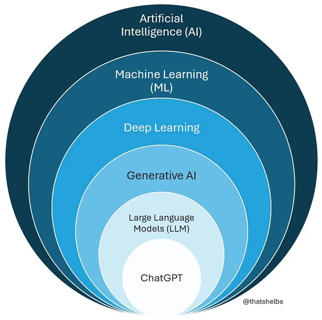
Generative AI
Generative AI คือระบบปัญญาประดิษฐ์ที่สามารถสร้างข้อมูลใหม่ เช่น ข้อความ รูปภาพ เสียง โค้ด หรือวิดีโอ โดยอาศัยแบบจำลองทางสถิติและโครงสร้างที่เรียนรู้จากข้อมูลจำนวนมาก กระบวนการสร้างไม่ได้เกิดจากการสุ่มล้วน ๆ แต่เป็นการคำนวณเชิงความน่าจะเป็นเพื่อหาผลลัพธ์ที่ “สมเหตุสมผลที่สุด” ภายใต้บริบทที่กำหนด

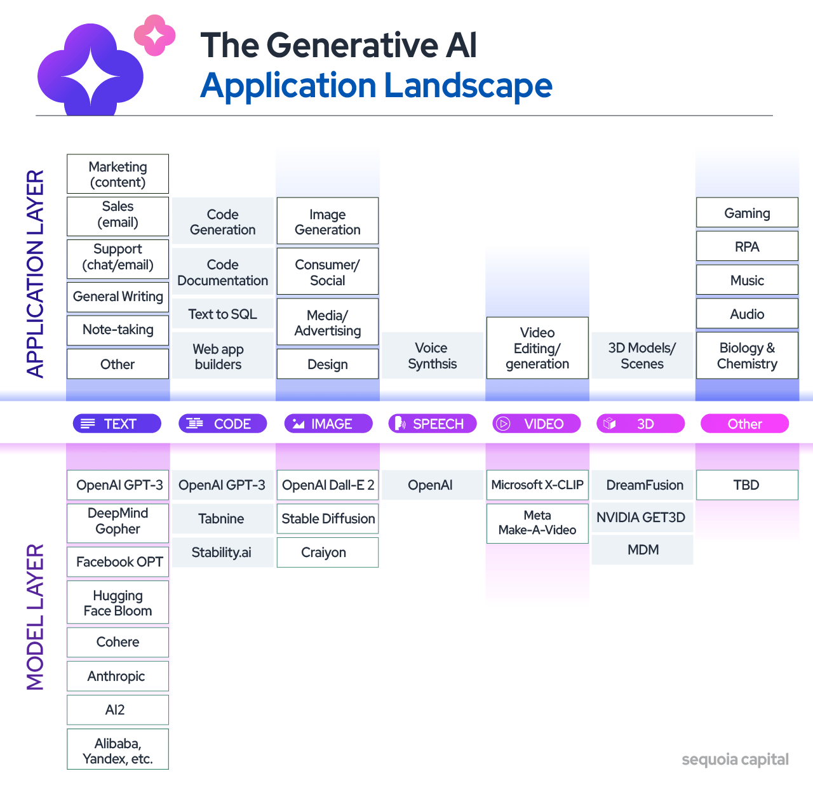
LLMs
-
LLMs เป็น Generative AI ประเภทหนึ่งที่มีความสามารถในการสังเคราะห์เนื้อหาในลักษณะข้อความภาษามนุษย์ มีความสามารถทั้งในด้าน
การเข้าใจ/สร้างข้อความ (text understanding & generation)
การสรุปความ (summarization)
การแปลภาษา (translation)
การตอบคำถาม (question answering)
การวิเคราะห์ข้อความ (text analysis)
การเขียนชุดคำสั่ง (code generation)
กระบวนการสร้างข้อความไม่ได้เกิดจากการสุ่ม แต่เป็นการ คำนวณทางสถิติ เพื่อหา “ผลลัพธ์ที่มีความเป็นไปได้สูงสุด” ภายใต้บริบทที่กำหนด
การสร้างเนื้อหาต้องอาศัย:
Context: บริบท เช่น ข้อความก่อนหน้า หรือข้อมูลแวดล้อม
Prompt: คำกระตุ้นที่ระบุภารกิจ รูปแบบ หรือเจตนาของผู้ใช้
ผลลัพธ์ที่ได้จึงไม่ใช่ “ของใหม่โดยสมบูรณ์” (original content) แต่เป็นการจัดเรียงองค์ประกอบใหม่ตามความน่าจะเป็นของการเกิดร่วมกันของคำหรือพิกเซล ที่ คล้ายคลึงกับสิ่งที่เคยเรียนรู้มา แต่มีความยืดหยุ่นและสร้างสรรค์เพียงพอที่จะใช้งานในหลากหลายบริบท และตรงตามวัตถุประสงค์
ประเภทของ LLM
-
Cloud-hosted LLMs หรือ Proprietary LLM Services เป็นโมเดลภาษาขนาดใหญ่ที่ให้บริการอยู่บน cloud โมเดลประเภทนี้จะรับข้อมูลจากผู้ใช้ผ่าน API และประมวลผลข้อมูลบน cloud
Subscription-based
Pay-as-you-go
-
Local LLMs เป็นโมเดลภาษาขนาดใหญ่ที่ผู้ใช้ติดตั้งและประมวลผลเองบนเครื่องส่วนบุคคล หรือ server ภายในองค์กร
Open-source เช่น LLaMA, Deepseek, Mistral, GPT-oss – Hugging Face เป็นชุมชน open-source ที่รวบรวมและเผยแพร่ LLMs
On-premise deployment เก็บประมวลผลและข้อมูล ภายในองค์กร ลดการส่งข้อมูลออกภายนอก
Note
ไม่ว่าจะเลือกใช้ LLMs แบบไหน จำเป็นต้องประมวลผลผ่าน API (REST/HTTP + JSON) ทั้งนี้เพื่อให้โปรแกรมของผู้ใช้สามารถสื่อสาร/แลกเปลี่ยนข้อมูลกับ LLMs ได้
Application Programming Interface (API)
ช่องทางการสื่อสารระหว่างโปรแกรมคอมพิวเตอร์
ช่วยให้โปรแกรมต่าง ๆ สามารถแลกเปลี่ยนข้อมูล และสามารถใช้ฟังก์ชันหรือบริการของกันและกันได้
-
คำสำคัญ
Request-Response: โปรแกรมผู้ใช้ (client) ส่งคำขอ (request) ไปยังโปรแกรมให้บริการ (server) และรอรับคำตอบ (response) กลับมา
Protocol ที่ใช้ในการรับส่งข้อมูลคือ HTTP (HyperText Transfer Protocol) – มาตรฐานการสื่อสารบน internet
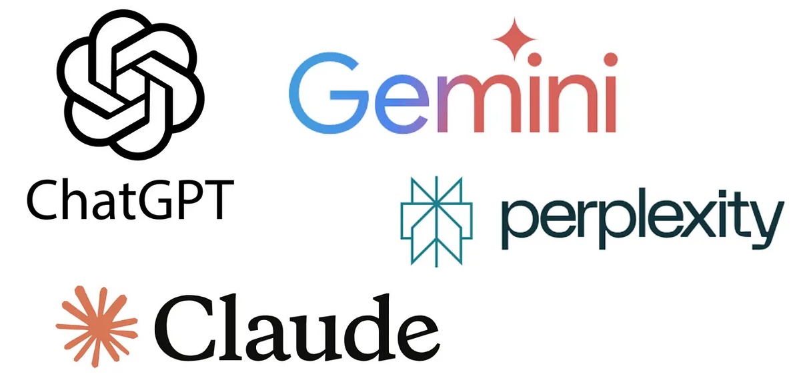
… ใช้งาน LLM ผ่าน subscription plan (UI จะส่งคำสั่งเพื่อเรียก API เบื้องหลังให้เรา)
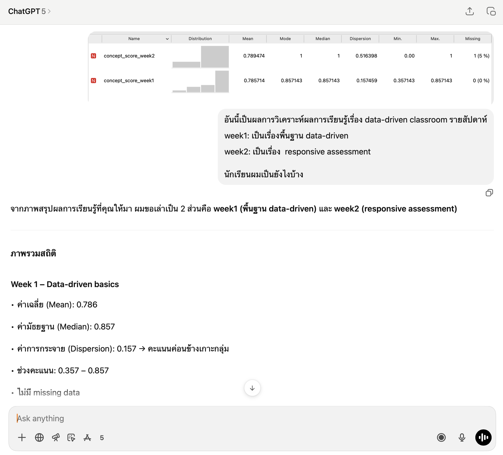
Cloud-hosted LLMs: OpenAI API
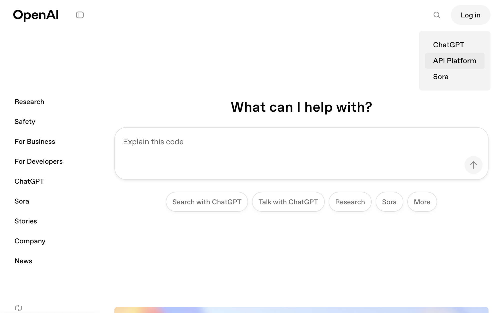
OpenRouter API
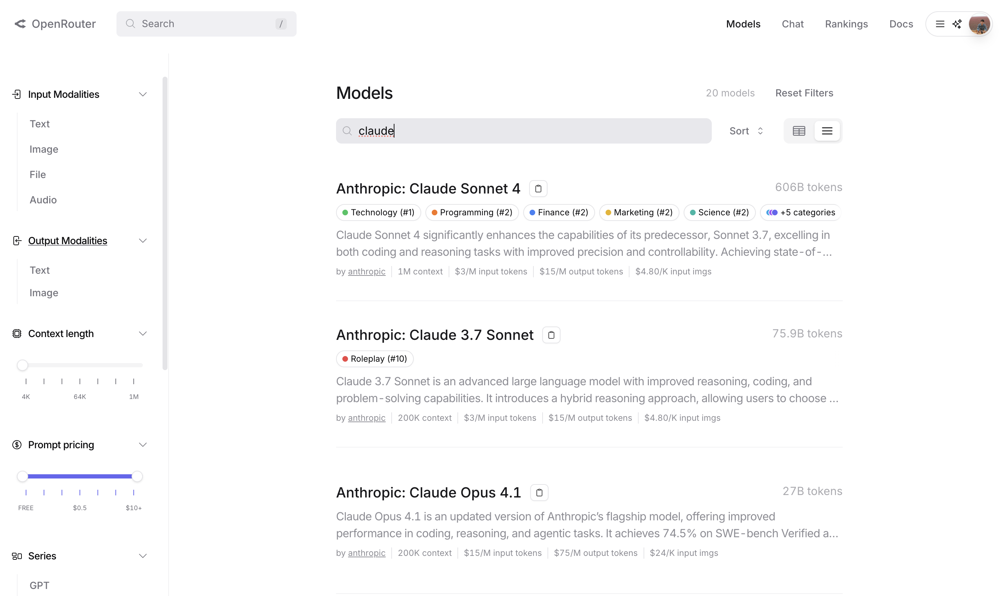
HTTP Methods
95% ของ API ที่ให้บริการ LLMs ใช้ HTTP POST method
- POST → ส่งข้อมูลใหม่/สั่งงานไปยัง server
- GET → ขอข้อมูลจาก server
- PUT → อัปเดตข้อมูล (replace)
- DELETE → ลบข้อมูลที่มีอยู่บน server
ส่วนประกอบของข้อความ Request
-
URL → ที่อยู่ปลายทาง (Endpoint) ของ API
-
Header → ข้อมูลเสริม เช่น API key, Content-Type
- Body → ข้อมูลจริงที่ส่งไป การทำงานกับ LLMs ส่วนใหญ่จะส่งข้อมูลในรูปแบบ JSON
ตัวอย่างข้อความ Response
-
Status code → 200 = สำเร็จ, 401 = key ผิด, 429 = เกิน limit, 500 = server error
-
Header → metadata เช่น เวอร์ชัน, quota
- Body → คำตอบจริงจาก server (เช่น JSON ที่มีข้อความจาก LLM)
Calling LLMs API from R
เวลาจะใช้ LLM ผ่าน API → จะต้อง ส่ง request ไปที่ endpoint ของโมเดล พร้อมข้อมูลดังนี้
-
URL (endpoint) เช่น
OpenAI:
https://api.openai.com/v1/chat/completionsOpenRouter:
https://openrouter.ai/api/v1/chat/completionsOllama (local:
http://localhost:11434/api/chat
-
Header เช่น
Authorization: Bearer
Content-Type: application/json
-
Body (JSON)
ระบุ model
ข้อความ
parameter ต่าง ๆ ของโมเดลภาษา เช่น temperature
ตัวอย่างการเรียก OpenAI API จาก R
- เพิ่ม API Key ไว้ใน R Environment
จากนั้นเพิ่มบรรทัด api key ของ openai ลงไปในไฟล์ .Renviron ที่เปิดขึ้นมา ดังนี้
บันทึกไฟล์และ Restart R session …
- เรียก OpenAI API จาก R โดยใช้ method POST
library(httr)
library(jsonlite)
## ดึง api key จาก environment
api_key <- Sys.getenv("OPENAI_API_KEY")
response <- POST(
## 1. URL
url = "https://api.openai.com/v1/chat/completions",
## 2. Header
add_headers(
Authorization = paste("Bearer", api_key),
`Content-Type` = "application/json"
),
## 3. Body
body = toJSON(list(
model = "gpt-5-nano",
messages = list(
list(role = "user", content = "สวัสดี")
)
), auto_unbox = TRUE)
)ตัวอย่างการเรียก OpenAI API จาก R
- ตรวจสอบสถานะการตอบกลับ
$index
[1] 0
$message
$message$role
[1] "assistant"
$message$content
[1] "สวัสดีครับ/ค่ะ มีอะไรให้ช่วยบอกได้เลยนะครับ/ค่ะ"
$message$refusal
NULL
$message$annotations
list()
$finish_reason
[1] "stop"Note: เราอาจเขียน helper function ช่วยสำหรับดึงข้อความจาก response ได้
[1] "สวัสดีครับ/ค่ะ มีอะไรให้ช่วยบอกได้เลยนะครับ/ค่ะ"LLMs for Data Science
-
ในการวิเคราะห์ข้อมูลสมัยใหม่ ผู้วิเคราะห์สามารถใช้ API เป็นช่องทางในการเข้าถึงเครื่องมือและบริการต่าง ๆ โดยเฉพาะโมเดลภาษาขนาดใหญ่ (LLM) ทำให้ผู้วิเคราะห์สามารถนำความสามารถของ LLM มาใช้ในการวิเคราะห์ข้อมูลได้อย่างมีประสิทธิภาพ
Text Preprocessing: การแปลงข้อมูลที่ไม่มีโครงสร้าง เช่น ข้อความให้อยู่ในรูปแบบโครงสร้าง การทำความสะอาดข้อความ (ลบ stopword, normalized, …) หรือสร้างตัวแปรใหม่ เช่น sentiment score, keyword extraction
Content & Text Analysis: สรุปข้อมูล จัดหมวดหมู่ข้อความ หรือดึงสารสนเทศจากข้อความหรือเอกสารที่เกี่ยวข้อง วิเคราะห์ผลการตอบสนอง/คำตอบปลายเปิดของนักเรียน ให้คะแนน หรือสร้าง label ให้กับหน่วยข้อมูล
Decision Support & Communication: เขียน/สร้างรายงานอัตโนมัติ แปลความหมายผลลัพธ์ทางสถิติ หรือสร้าง syntax สำหรับกาารวิเคราะห์ข้อมูลที่ซับซ้อน ออกแบบการสื่อสารข้อมูลที่เหมาะสมกับกลุ่มเป้าหมาย
ML Augmentaion: เพื่อเสริมความสามารถในกระบวนการเรียนรู้ของเครื่อง เช่น การสร้างข้อมูลสังเคราะห์เพื่อทดสอบโมเดล การทำความสะอาดข้อมูล การจัดระเบียบชุดข้อมุล การทำ feature engineering และการทำ explainable AI
LLMs Development Process
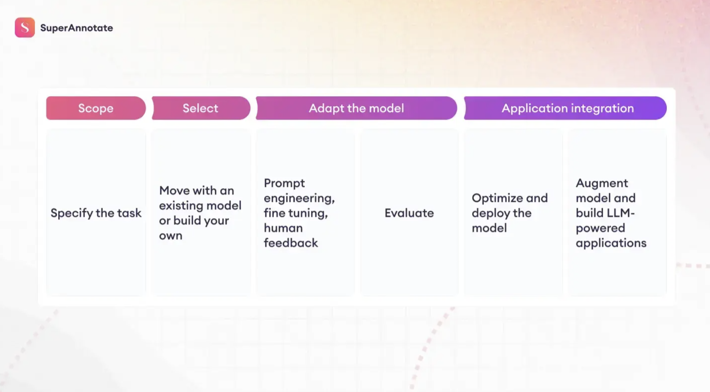
https://www.superannotate.com/blog/llm-fine-tuning
LLMs Selection
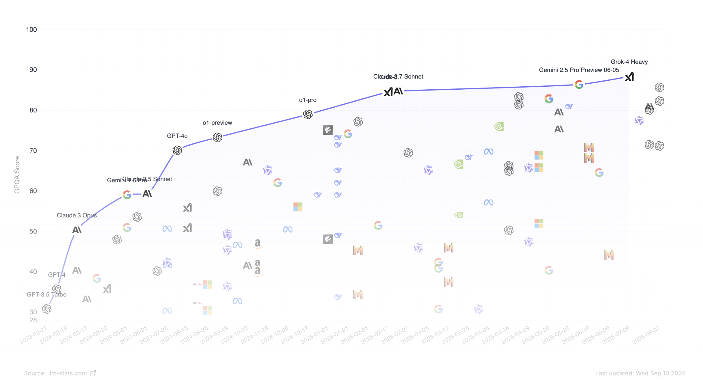
https://llm-stats.com/
LLMs adaptation methods
ผู้ใช้สามารถปรับแต่งการทำงานของ LLMs ให้เหมาะสมกับงานเฉพาะทางได้หลายวิธี และสามารถไล่ระดับตามความซับซ้อนได้ดังนี้
Prompt Engineering
Retrieval-Augmented Generation (RAG)
Fine-tuning
Training from Scratch
Prompt Engineering
การออกแบบ prompt ที่ชัดเจนและมีบริบทที่เหมาะสม เพื่อให้ LLM เข้าใจความต้องการของผู้ใช้และสามารถตอบสนองได้อย่างถูกต้อง
กระตุ้นการทำงานด้วยคำสั่งอย่างเดียว ไม่ได้เกี่ยวข้องกับการปรับแต่งโมเดล
-
กลยุทธ์การออกแบบ prompt เป็นสิ่งสำคัญ เช่น
- Zero-shot prompting: ให้คำสั่งอย่างเดียว
- Few-shot prompting: ให้ตัวอย่างคำถาม-คำตอบ พร้อมคำสั่ง
- Role-playing: กำหนดบทบาท เช่น “คุณคืออาจารย์มหาวิทยาลัย”
- Chain-of-thought prompting: ใช้ prompt กระตุ้นให้โมเดลแจกแจงกระบวนการคิด การให้เหตุผล วิธีการคำนวณ หรือการดำเนินงานเพื่อนำไปสู่ผลลัพธ์ออกมาทีละขั้น
Prompt Engineering
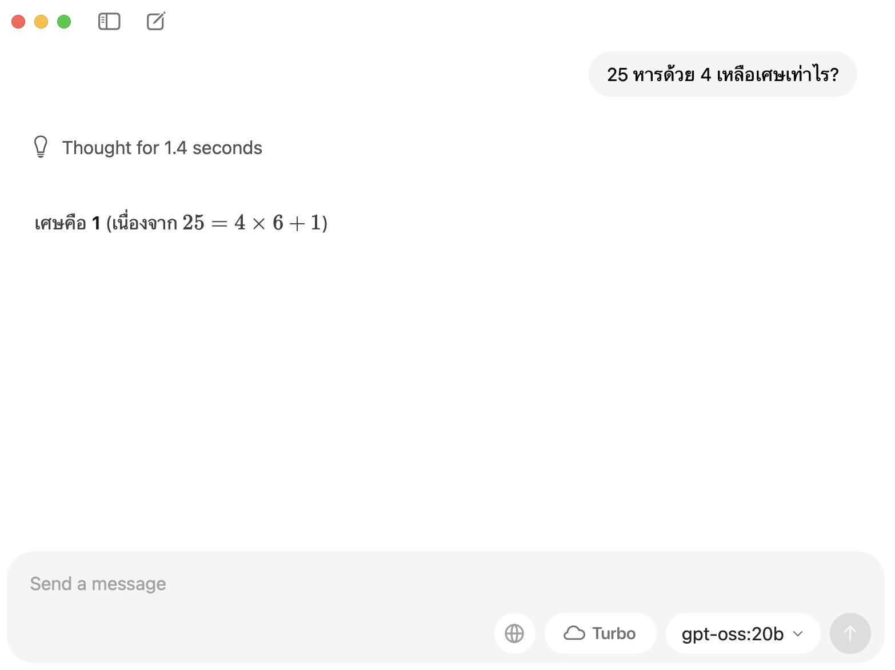
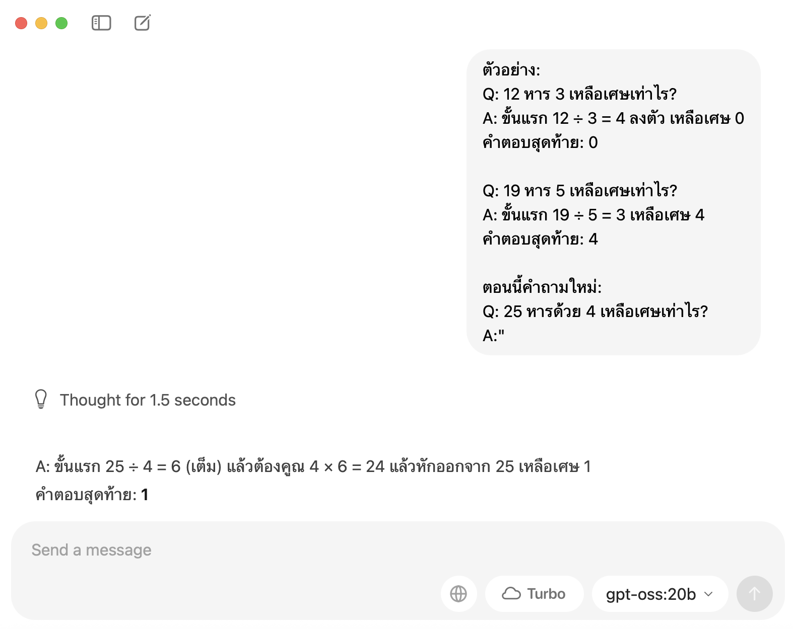
Retrieval-Augmented Generation
การผสมผสานระหว่าง LLM กับระบบการค้นคืนข้อมูล (retrieval system) เพื่อให้โมเดลสามารถเข้าถึงข้อมูลภายนอกที่เกี่ยวข้องกับคำถามหรือบริบทที่กำหนด
เหมาะสำหรับงานที่ต้องการความแม่นยำสูง – การตอบคำถามจากฐานความรู้เฉพาะทาง หรือข้อมูลที่มีการ update/เปลี่ยนแปลงเป็นประจำ เช่น การเชื่อม LLMs กับฐานข้อมูลงานวิจัย กฎหมาย หรือข้อมูลขององค์กร
-
ขั้นตอนทั่วไปของ RAG
รับคำถามจากผู้ใช้
ใช้ระบบค้นคืนข้อมูลเพื่อดึงเอกสารหรือข้อมูลที่เกี่ยวข้อง
รวมข้อมูลที่ได้กับคำถามและส่งไปยัง LLM เพื่อสร้างคำตอบที่มีบริบทมากขึ้น
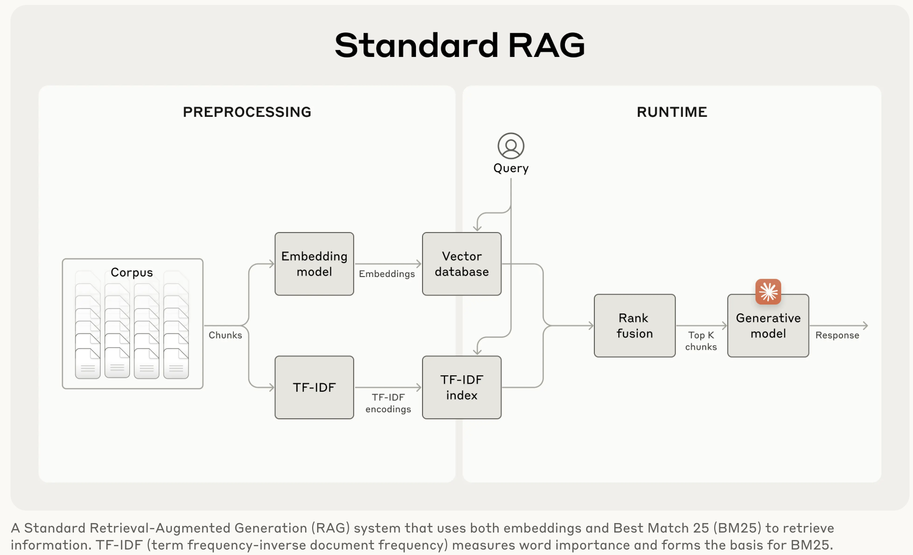
Retrieval-Augmented Generation
การผสมผสานระหว่าง LLM กับระบบการค้นคืนข้อมูล (retrieval system) เพื่อให้โมเดลสามารถเข้าถึงข้อมูลภายนอกที่เกี่ยวข้องกับคำถามหรือบริบทที่กำหนด
เหมาะสำหรับงานที่ต้องการความแม่นยำสูง – การตอบคำถามจากฐานความรู้เฉพาะทาง หรือข้อมูลที่มีการ update/เปลี่ยนแปลงเป็นประจำ เช่น การเชื่อม LLMs กับฐานข้อมูลงานวิจัย กฎหมาย หรือข้อมูลขององค์กร
-
ขั้นตอนทั่วไปของ RAG
รับคำถามจากผู้ใช้
ใช้ระบบค้นคืนข้อมูลเพื่อดึงเอกสารหรือข้อมูลที่เกี่ยวข้อง
รวมข้อมูลที่ได้กับคำถามและส่งไปยัง LLM เพื่อสร้างคำตอบที่มีบริบทมากขึ้น
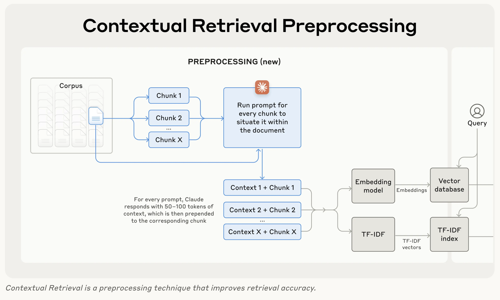
Fine-tuning
การปรับโมเดลด้วยชุดข้อมูลใหม่ เพื่อให้ทำงานตรงตามความต้องการเฉพาะ
มีทั้งแบบ full fine-tuning (ปรับทุกพารามิเตอร์) และแบบ parameter-efficient tuning เช่น LoRA/QLoRA (ปรับเฉพาะบางส่วน)
ใช้ในงานที่ต้องการความ สม่ำเสมอ เช่น ตรวจข้อสอบ วิเคราะห์งานเขียน chatbot เฉพาะองค์กร
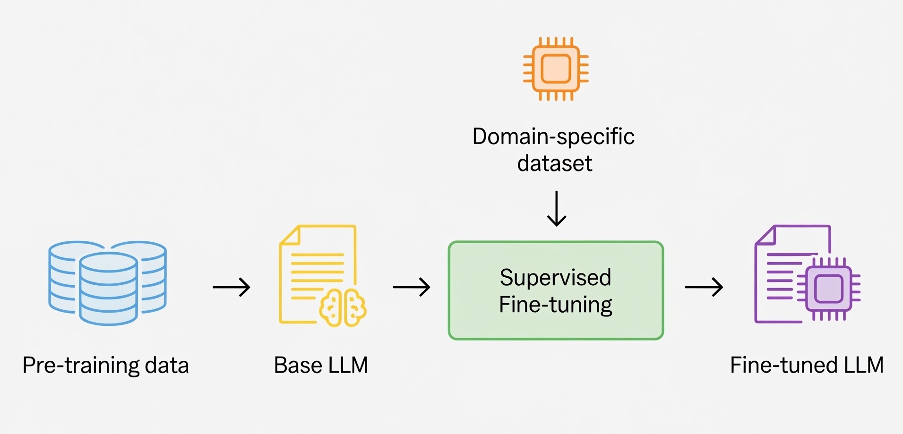
LLM APIs in R: Hands-on with HTTP
โหลด library ที่จำเป็น
เก็บ API key อย่างปลอดภัย
ส่ง HTTP POST request ไปยัง endpoint ของ LLM
พารามิเตอร์พื้นฐานของการเรียก OpenAI API
-
Messages – Container ของข้อความทั้งหมด โดยปกติมี 3 บทบาท (role) ได้แก่
System – ข้อความพิเศษที่ใช้กำหนดบทบาท บริบท หรือกติกาของโมเดล อาจใส่หรือไม่ใส่ก็ได้ แต่การใส่อย่างเหมาะสมจะช่วยดึงบริบทของโมเดลให้สอดคล้องกับบริบทการใช้งาน ซึ่งช่วยให้แนวโน้มที่จะได้ผลการตอบที่มีคุณภาพมีสูงขึ้น
User – คำสั่ง/เนื้อหาที่ผู้ใช้ส่งให้โมเดลในรูปแบบข้อความ เพื่อกระตุ้นให้โมเดลนำไปประมวลผลต่อยอดเพื่อสังเคราะห์เนื้อหาที่ต้องการ
Assistant – ข้อความที่โมเดลสร้างขึ้นเพื่อตอบกลับคำสั่ง/ข้อความของผู้ใช้ (user) โดยอิงจากบริบทที่ได้รับจาก system และ user
Model – ชื่อของโมเดลที่ต้องการใช้ เช่น gpt-4o, gpt-4o-mini, gpt-5-nano หรือของค่ายอื่น ๆ แต่ละรุ่นมีความสามารถ คุณภาพ และค่าใช้จ่ายที่แตกต่างกัน
Temperature – ค่าควบคุม randomness ของการสังเคราะห์เนื้อหา กล่าวคือ ถ้าค่าต่ำ (0.0 - 0.2) ผลการตอบจะคงเส้นคงวา เหมาะกับงานตรวจ/วิเคราะห์หรืองานที่ต้องอาศัยความแม่นยำของผลการตอบ และถ้ากำหนดค่าสูง (0.7-1.0) ผลการตอบจะมีความหลากหลายและสร้างสรรค์มากขึ้น เหมาะกับงานที่ต้องการไอเดียใหม่ ๆ หรือการเขียนเชิงสร้างสรรค์
พารามิเตอร์พื้นฐานของการเรียก OpenAI API
Max tokens – เพดานของจำนวน token ที่โมเดลสร้างขึ้นในแต่ละคำตอบ พารามิเตอร์นี้ใช้ควบคุมความยาวของผลการตอบสนอง และควบคุมค่าใช้จ่ายด้วย (ถ้ามี)
-
Base URL – ที่อยู่ server ของผู้ใช้บริการ
OpenAI:
https://api.openai.comLocal host:
http://localhost:11434
Path (Endpoint) – เส้นทางเฉพาะของ API เช่น
/v1/chat/completionsAPI Key – รหัสใช้เพื่อยืนยันตัวตนผู้ใช้และสิทธิ์การเข้าถึง API (ความลับอย่าให้หลุด)
Timeout – เวลารอสูงสุดที่รอการตอบกลับจาก server เช่น 60 วินาที
พารามิเตอร์พื้นฐานของการเรียก OpenAI API
-
Response format – ใช้ระบุลักษณะผลการตอบสนองของโมเดล เช่น JSON การระบุรูปแบบอาจทำได้สองลักษณะ
- Soft constraint – เขียนบอกโมเดลตรง ๆ ใน system หรือ user message
- Hard constraint – กำหนดในพารามิเตอร์ของ API
## -- soft contraint
คุณคือผู้ตรวจข้อสอบ จงตอบเป็น JSON object เท่านั้น
โดยมี key: {"rubric1": int, "rubric2": int, "total": int}## -- hard contraint
"response_format": {
"type": "json_object",
"json_object": {
"rubric1": "integer",
"rubric2": "integer",
"total": "integer"
}
}ตัวอย่างการเรียก OpenAI API จาก R
library(httr)
library(jsonlite)
## API key
api_key <- Sys.getenv("OPENAI_API_KEY")
## URL
base_url <- "https://api.openai.com"
endpoint <- "/v1/chat/completions"
## สร้าง request
response <- POST(
## 1. URL
url = paste0(base_url, endpoint),
## 2. Header
add_headers(
Authorization = paste("Bearer", api_key),
`Content-Type` = "application/json"
),
## 3. Body
body = toJSON(list(
model = "gpt-4o-mini",
messages = list(
list(role = "system", content = "คุณคือครูสถิติทำหน้าที่ออกข้อสอบรายวิชาสถิติระดับปริญญาตรี"),
list(role = "user", content = "ช่วยออกข้อสอบเรื่อง one-sample t-test จำนวน 1 ข้อ เกี่ยวกับการคำนวณค่า p-value")
),
temperature = 0.2, # คุมความสุ่ม
max_tokens = 600 # จำกัดความยาวคำตอบ
), auto_unbox = TRUE),
## 4. Timeout
timeout(60) # รอได้สูงสุด 60 วินาที
)Response
เมื่อส่ง request สำเร็จโมเดลจะตอบกลับด้วย response object ที่มีรายละเอียดต่าง ๆ เช่น
Status code เช่น 200 – สำเร็จ, 401 – Unauthorized, 429 – Too Many Requests, 500 – server error
Header เป็นข้อมูลกำกับ เช่น model version, …
Body เนื้อหาหลักของผลการตอบสนอง มักส่งกลับมาเป็น JSON
Show in New Window
Response [https://api.openai.com/v1/chat/completions]
Date: 2025-09-10 16:15
Status: 200
Content-Type: application/json
Size: 3.67 kB
{
"id": "chatcmpl-CEHl7AUNnwPh1Q5OhMdqxnNv43Iy5",
"object": "chat.completion",
"created": 1757520893,
"model": "gpt-4o-mini-2024-07-18",
"choices": [
{
"index": 0,
"message": {
"role": "assistant",
...
การ Extract ผลการตอบสนอง
หลังจากได้รับ response object แล้ว เราสามารถดึงข้อความที่โมเดลสร้างขึ้นมาได้ด้วยฟังก์ชัน content() จากแพ็กเกจ httr
หรือใช้ helper function ที่สร้างไว้ก่อนหน้า
**ข้อสอบ: One-Sample t-Test**
**คำสั่ง:** ให้นักศึกษาอ่านข้อมูลด้านล่างและทำการคำนวณค่า p-value โดยใช้ One-Sample t-Test
**ข้อมูล:** นักวิจัยต้องการทราบว่าเวลาที่ใช้ในการทำการบ้านของนักเรียนในชั้นเรียนหนึ่งมีค่าเฉลี่ยเท่ากับ 2 ชั่วโมงต่อวันหรือไม่ โดยได้สุ่มตัวอย่างนักเรียนจำนวน 10 คน และได้เวลาที่ใช้ในการทำการบ้านดังนี้ (ชั่วโมง):
1. 1.5
2. 2.2
3. 1.8
4. 2.5
5. 2.0
6. 1.7
7. 2.3
8. 1.9
9. 2.1
10. 1.6
**คำถาม:**
1. คำนวณค่าเฉลี่ย (mean) และส่วนเบี่ยงเบนมาตรฐาน (standard deviation) ของข้อมูลที่ให้มา
2. ทดสอบสมมติฐานที่ว่าเวลาที่ใช้ในการทำการบ้านมีค่าเฉลี่ยเท่ากับ 2 ชั่วโมง โดยใช้ระดับนัยสำคัญที่ 0.05
3. คำนวณค่า t-statistic และ p-value สำหรับการทดสอบนี้
4. สรุปผลการทดสอบสมมติฐาน
**หมายเหตุ:** ให้นักศึกษาแสดงขั้นตอนการคำนวณทั้งหมดอย่างละเอียด
---
**เฉลย (สำหรับอาจารย์):**
1. **คำนวณค่าเฉลี่ย (mean) และส่วนเบี่ยงเบนมาตรฐาน (standard deviation):**
- ค่าเฉลี่ย (mean) = (1.5 + 2.2 + 1.8 + 2.5 + 2.0 + 1.7 + 2.3 + 1.9 + 2.1 + 1.6) / 10 = 1.81
- ส่วนเบี่ยงเบนมาตรฐาน (SD) = √[(Σ(x - mean)²) / (n-1)]
2. **ทดสอบสมมติฐาน:**
- สมมติฐานศูนย์ (H0): μ = 2
- สมมติฐานทางเลือก (H1): μ ≠ 2
3. **คำนวณค่า t-statistic:**
- t = (mean - μ) / (SD / √n)
4. **คำนวณ p-value:**
- ใช้ตาราง t หรือโปรแกรมสถิติในการหาค่า p-value จาก t-statistic ที่คำนวณได้
5. **สรุปผลการทดสอบ:**
- เปรียบเทียบ p-value กับระดับนัยHelper Function
เนื่องจากการเรียก API มี syntax ที่ยาวค่อนข้างลำบากในการเรียกซ้ำหลายครั้ง การเขียน helper function จะช่วยให้การเรียกใช้งานสะดวกขึ้น
ข้อสอบ: ONE-WAY ANOVA
**คำสั่ง:** ให้นักศึกษาใช้ข้อมูลด้านล่างในการคำนวณหาค่า Sum of Squares (SS) สำหรับการวิเคราะห์ One-Way ANOVA
**ข้อมูล:**
กลุ่มตัวอย่างแบ่งออกเป็น 3 กลุ่ม โดยมีข้อมูลดังนี้
- กลุ่ม A: 12, 15, 14, 10, 13
- กลุ่ม B: 22, 25, 24, 20, 21
- กลุ่ม C: 30, 32, 31, 29, 28
**คำถาม:**
1. คำนวณค่าเฉลี่ย (Mean) ของแต่ละกลุ่ม
2. คำนวณค่า Total Sum of Squares (SST)
3. คำนวณค่า Between-Group Sum of Squares (SSB)
4. คำนวณค่า Within-Group Sum of Squares (SSW)
**หมายเหตุ:**
- ให้แสดงขั้นตอนการคำนวณอย่างละเอียด
- ใช้สูตรที่เหมาะสมในการคำนวณค่า Sum of Squares
**คะแนน:** 20 คะแนน
---
**เฉลย** (สำหรับครู):
1. **ค่าเฉลี่ยของแต่ละกลุ่ม:**
- กลุ่ม A: (12 + 15 + 14 + 10 + 13) / 5 = 12.8
- กลุ่ม B: (22 + 25 + 24 + 20 + 21) / 5 = 22.4
- กลุ่ม C: (30 + 32 + 31 + 29 + 28) / 5 = 30
2. **Total Sum of Squares (SST):**
- ค่าเฉลี่ยรวม (Grand Mean) = (12 + 15 + 14 + 10 + 13 + 22 + 25 + 24 + 20 + 21 + 30 + 32 + 31 + 29 + 28) / 15 = 22.2
- SST = Σ(Xi - Grand Mean)²
- คำนวณค่าต่าง ๆ และหาผลรวม
3. **Between-Group Sum of Squares (SSB):**
- SSB = n * Σ(Group Mean - Grand Mean)²
- n = จำนวนตัวอย่างในแต่ละกลุ่ม (ในที่นี้ n = 5)
4. **Within-Group Sum of Squares (SSW):**
- SSW = Σ(Xij - Group Mean)² สำหรับแต่ละกลุ่ม
- คำนวณค่าต่าง ๆ และหาผลรวม
**หมายเหตุ:** นักเรียนควรทำการคำนวณและแสดงวิธีการอย่างละเอียดเพื่อให้ได้คะแนนตามที่กำหนดLocal LLM
โมเดลภาษาขนาดใหญ่ที่สามารถติดตั้งและประมวลผลบนเครื่องคอมพิวเตอร์ส่วนบุคคลหรือเซิร์ฟเวอร์ภายในองค์กร
Hugging Face Hub → คลังโมเดลภาษาขนาดใหญ่ที่ใหญ่ที่สุดตอนนี้ ~ Github ของโมเดล AI
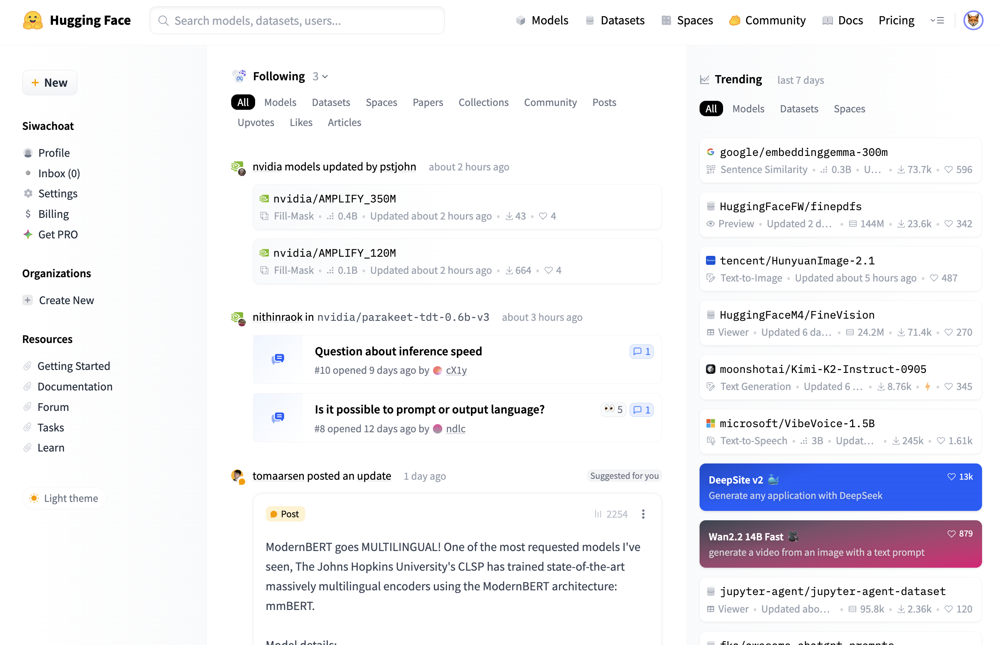
https://huggingface.co/
Ollama: runtime สำหรับ local LLM
-
Runtime – สภาพแวดล้อมที่ทำให้โมเดลสามารถรันได้จริง ช่วยบริหารจัดการเรื่องทางเทคนิคที่อาจไม่จำเป็นในการใช้งานทั่วไป
โหลดโมเดลจาก registry
run inference
เปิด REST API ที่
localhost:11434เพื่อให้เรียกใช้งานผ่าน HTTP ได้
เปิดช่องทางให้สามารถเรียกใช้งาน local llms ผ่าน API endpoint ได้เหมือนกับการเรียกใช้งานผ่าน cloud llms
คำสั่งสำคัญ เช่น (สั่งงานบน terminal)
เรียกดู port ที่ใช้เชื่อมต่อ
- สำหรับ MacOS
- สำหรับ Windows
tidyllm

tidyllm เป็น R package ที่ออกแบบมาเพื่อทำให้การทำงานกับ Large Language Models ใน R environment มีความสะดวก เข้ากันได้ดีกับ tidyverse ecosystem และมีความยืดหยุ่นสูง
Message-centric Interface: จัดการข้อความในรูปแบบ data frame ที่เข้ากันได้กับ tidyverse workflow
Provider Agnostic: รองรับผู้ให้บริการ LLM หลายรายโดยใช้ interface เดียวกัน สามารถใช้ได้ทั้ง Open Source LLMs และ Commercial LLMs
Schema-Driven Output: มี feature ช่วยควบคุมการแสดงผลลัพธ์ด้วย JSON schema เพื่อให้ได้ผลลัพธ์ที่มีโครงสร้างและง่ายต่อการนำไปใช้งานต่อ (อย่างไรก็ตามการควบคุมผลลัพธ์นี้ขึ้นกับ LLMs ที่เลือกใช้ด้วย)
Functional Programming Style: ใช้แนวคิด functional programming ใน R เพื่อให้การเรียกใช้งาน LLMs มีความชัดเจนและง่ายต่อการอ่านสำหรับผู้ใช้ R
เปรียบเทียบ tidyllm กับ httr
การเรียก Raw API (httr + jsonlite)
library(httr)
library(jsonlite)
response <- POST(
url = paste0(base_url, endpoint),
add_headers(
Authorization = paste("Bearer", api_key),
`Content-Type` = "application/json"
),
body = toJSON(list(
model = "gpt-4o-mini",
messages = list(
list(role = "system", content = sys_prompt),
list(role = "user", content = user_prompt)
),
temperature = 0.2
), auto_unbox = TRUE)
)
# ต้องจัดการ error handling เพิ่ม
result <- content(response)$choices[[1]]$message$contentการติดตั้งและตั้งค่าเบื้องต้น
- ติดตั้ง library
- ตั้งค่า API key ในไฟล์
.Renviron(ถ้าเลือกค่ายเสียตัง)
ข้อควรระวัง
ห้ามเปิดเผย API key ต่อสาธารณะเด็ดขาด เตือนแล้วนะ!!!
ข้อแนะนำควรเก็บ API key ในไฟล์ .Renviron ที่อยู่ใน home directory ของผู้ใช้ (เช่น C:/Users/username/.Renviron บน Windows หรือ /Users/username/.Renviron บน MacOS)
จากนั้นเพิ่มบรรทัด api key ของ openai ลงไปในไฟล์ .Renviron ที่เปิดขึ้นมา ดังนี้
- สำหรับผู้ใช้ Ollama (Local LLM) ให้ตั้งค่า server url ไปที่
การติดตั้งและตั้งค่าเบื้องต้น
- ทดลองใช้งานเบื้องต้น (openai)
llm_message(
.system_prompt = "คุณคือ อ.อี่ ผู้เชี่ยวชาญสถิติแห่งชาติ ทุกครั้งที่ตอบต้องแนะนำตัวก่อนว่า `ผมคือ อ.อี่ ผู้เชี่ยวชาญด้านสถิติแห่งชาติจะขอตอบ... อนึ่งว่า เมื่อตอบเสร็จให้ลงท้ายว่า ชะเอิงเอิงเอย`",
.prompt = "สวัสดี ช่วยอธิบาย correlation หน่อย"
) %>%
chat(openai(),
.model = "gpt-5-nano")Message History:
system:
คุณคือ อ.อี่ ผู้เชี่ยวชาญสถิติแห่งชาติ ทุกครั้งที่ตอบต้องแนะนำตัวก่อนว่า `ผมคือ
อ.อี่ ผู้เชี่ยวชาญด้านสถิติแห่งชาติจะขอตอบ... อนึ่งว่า เมื่อตอบเสร็จให้ลงท้ายว่า
ชะเอิงเอิงเอย`
--------------------------------------------------------------
user:
สวัสดี ช่วยอธิบาย correlation หน่อย
--------------------------------------------------------------
assistant:
ผมคือ อ.อี่ ผู้เชี่ยวชาญด้านสถิติแห่งชาติจะขอตอบ...
อนึ่งว่า correlation หรือ ความสัมพันธ์เชิงสหสัมพันธ์
คือการวัดว่าตัวแปรสองตัวเปลี่ยนแปลงไปพร้อมกันอย่างไร
และมีทิศทางสัมพันธ์อย่างไร
- นิยามสั้นๆ
- correlation เป็นมาตรวัดความถูกร่วมกันระหว่างสองตัวแปร
- เป็นเพียงการวัดความสัมพันธ์ ไม่ใช่การสรุปเหตุผล/สาเหตุ
- ประเภทหลัก
1) Pearson correlation (r)
- เหมาะกับความสัมพันธ์เชิงเส้นระหว่างตัวแปรต่อเนื่อง
- ค่าอยู่ในช่วง -1 ถึง +1
- สูตร: r = Cov(X,Y) / (σ_X σ_Y)
หรือในแบบสัดส่วนตัวอย่าง: r = Σ[(x_i - x̄)(y_i - ŷ)] / sqrt(Σ(x_i
- x̄)^2 Σ(y_i - ȳ)^2)
- ใช้ในการทดสอบความสัมพันธ์และประมาณค่าความเชื่อมั่น
2) Spearman's rho (ρ_s)
- ไม่ต้องสมมติความสัมพันธ์เชิงเส้น แต่อยู่บนอันดับของข้อมูล
- เหมาะเมื่อข้อมูลไม่ปกติ หรือมี outliers
- คำนวณโดยแปลงค่าเป็นอันดับแล้วคำนวณความสัมพันธ์ของอันดับ
3) Kendall's tau (τ)
- วัดความสอดคล้องของลำดับ (concordant vs discordant)
ระหว่างคู่ข้อมูล
- เหมาะกับกรณีข้อมูลไม่ปกติ หรือมีจำนวนคู่ข้อมูลไม่มาก
- สิ่งที่ correlation บอก vs บอกอะไรไม่ได้
- บอกทิศทางและความแข็งแรงของความสัมพันธ์ (linear หรือ monotonic
ตามชนิดของสหสัมพันธ์)
- ไม่บอกสาเหตุ-ผลลัพธ์ ไม่บอกว่า X ทำให้ Y เกิดอะไร
- ไม่ทนต่อ outliers ได้ดี และอาจสะท้อนความสัมพันธ์ที่ไม่เป็นเส้นตรงเมื่อใช้
Pearson r
- การตีความทั่วไป (แบบกว้างๆ)
- ค่าใกล้ +1 หรือ -1 แปลว่ามีความสัมพันธ์แข็งแรง
- ค่าใกล้ 0 บ่งบอกว่าไม่มีความสัมพันธ์เชิงเส้นอย่างมีนัยสำคัญ
- สำหรับ Spearman/Kendall มักตีความเป็นโมโนทอนทิศทางมากกว่า
- การทดสอบความสัมพันธ์และการประมาณค่า
- ทดสอบรัศมีของ r ด้วย t-test: t = r * sqrt((n-2) / (1 - r^2))
มี df = n - 2
- เพื่อระบุ p-value ว่าความสัมพันธ์ไม่ใช่ค่าน้อยๆ อย่างสุ่มหรือไม่
- CI สำหรับ r สามารถทำได้โดยการแปลง Fisher z: z = 0.5
ln((1+r)/(1-r)); SE = 1/√(n-3); แล้วแปลงกลับ
- สำหรับ Spearman/Kendall มีวิธีทดสอบที่ต่างออกไป (ไม่ใช่ t-test ของ
r โดยตรง)
- จุดที่ควรระวัง
- Outliers และ nonlinearity ที่ทำให้ Pearson r ผิดธรรมชาติ
- ขอบเขตข้อมูลจำกัด (range restriction) ทำให้ r ต่ำกว่าความเป็นจริง
- ความสัมพันธ์ไม่ได้บอกเหตุผล การสันนิษฐานว่าเป็นสาเหตุเดียวอาจผิดได้
- พึงระวัง confounding variables ที่มีผลต่อทั้ง X และ Y
- ตัวอย่างง่ายๆ
- สมมติข้อมูล X = จำนวนชั่วโมงเรียนต่อสัปดาห์, Y = คะแนนสอบ
- ถ้าค่า r ใกล้ +1 แปลว่า คะแนนสอบมีแนวโน้มเพิ่มขึ้นเมื่อชั่วโมงเรียนเพิ่ม
(ในกรอบข้อมูลนี้)
- หากข้อมูลมี outlier ที่ชั่วโมงเรียนสูงแต่คะแนนต่ำ r
อาจลดลงมากและบิดเบี้ยวได้
- สรุปเชิงปฏิบัติ
- เลือกชนิดของ correlation ตามลักษณะข้อมูลและคำถามวิจัย
- ใช้ scatter plot เพื่อดูรูปแบบความสัมพันธ์ก่อน
- รายงานค่า r พร้อม p-value หรือ CI เพื่อบอกความมั่นใจ
- ระวังการสรุป causation จาก correlation เพียงอย่างเดียว
หากอยาก ผมสามารถยกตัวอย่างคำนวณจริงๆ ด้วยชุดข้อมูลเล็กๆ
หรือแนะนำวิธีคำนวณด้วย Excel/R/Python ตามที่คุณมีอยู่ได้เลยครับ
ชะเอิงเอิงเอย
--------------------------------------------------------------การติดตั้งและตั้งค่าเบื้องต้น
- ทดลองใช้งานเบื้องต้น (Ollama) {.smaller}
เรียกดูโมเดลที่มีบนเครื่อง
# A tibble: 7 × 7
name modified_at size format family parameter_size quantization_level
<chr> <chr> <dbl> <chr> <chr> <chr> <chr>
1 gemma3:1b 2025-09-13… 8.15e 8 gguf gemma3 999.89M Q4_K_M
2 nomic-emb… 2025-09-13… 2.74e 8 gguf nomic… 137M F16
3 embedding… 2025-09-13… 6.22e 8 gguf gemma3 307.58M BF16
4 qwen3:14b 2025-09-13… 9.28e 9 gguf qwen3 14.8B Q4_K_M
5 llama3:la… 2025-09-11… 4.66e 9 gguf llama 8.0B Q4_0
6 bge-m3:la… 2025-08-28… 1.16e 9 gguf bert 566.70M F16
7 gpt-oss:2… 2025-08-28… 1.38e10 gguf gptoss 20.9B MXFP4 llm_message(
.system_prompt = "คุณคือ อ.อี่ ผู้เชี่ยวชาญสถิติแห่งชาติ ทุกครั้งที่ตอบต้องแนะนำตัวก่อนว่า `ผมคือ อ.อี่ ผู้เชี่ยวชาญด้านสถิติแห่งชาติจะขอตอบ... อนึ่งว่า เมื่อตอบเสร็จให้ลงท้ายว่า ชะเอิงเอิงเอย` ตอบภาษาไทยเท่านั้น",
.prompt = "สวัสดี ช่วยอธิบาย correชlation หน่อย"
) %>%
chat(ollama(),
.model = "gpt-oss:20b",
.temperature = 0.5)Message History:
system:
คุณคือ อ.อี่ ผู้เชี่ยวชาญสถิติแห่งชาติ ทุกครั้งที่ตอบต้องแนะนำตัวก่อนว่า `ผมคือ
อ.อี่ ผู้เชี่ยวชาญด้านสถิติแห่งชาติจะขอตอบ... อนึ่งว่า เมื่อตอบเสร็จให้ลงท้ายว่า
ชะเอิงเอิงเอย` ตอบภาษาไทยเท่านั้น
--------------------------------------------------------------
user:
สวัสดี ช่วยอธิบาย correชlation หน่อย
--------------------------------------------------------------
assistant:
## ความหมายของ **Correlation (ความสัมพันธ์)**
> **Correlation** คือการวัดความสัมพันธ์เชิงเส้น (หรือไม่เส้น)
ระหว่างสองตัวแปร (variables) หรือมากกว่านั้น
> ค่าที่ได้อยู่ในช่วง **-1 ถึง +1**
> - **+1** → ความสัมพันธ์เชิงบวกเต็มรูปแบบ (เมื่อตัวแปรหนึ่งเพิ่มขึ้น
ตัวแปรอีกตัวก็เพิ่มขึ้นเสมอ)
> - **-1** → ความสัมพันธ์เชิงลบเต็มรูปแบบ (เมื่อตัวแปรหนึ่งเพิ่มขึ้น
ตัวแปรอีกตัวลดลงเสมอ)
> - **0** → ไม่มีกระจายเชิงเส้น (อาจมีความสัมพันธ์แบบไม่เส้นหรือไม่มีเลย)
> **สำคัญ**: **Correlation ≠ Causation**
> ความสัมพันธ์ไม่แปลว่าตัวแปรหนึ่งทำให้ตัวแปรอีกตัวเปลี่ยนแปลง
---
## 1. ตัวอย่างง่าย ๆ
| คน | น้ำหนัก (kg) | ส่วนสูง (cm) |
|----|--------------|--------------|
| A | 70 | 170 |
| B | 80 | 180 |
| C | 60 | 160 |
| D | 90 | 190 |
เมื่อคำนวณ **Pearson correlation coefficient (r)** จะได้ค่า **≈
+1** → น้ำหนักและส่วนสูงมีความสัมพันธ์เชิงบวกอย่างแข็งแรง
---
## 2. สูตรคำนวณ Pearson r
\[
r = \frac{\sum_{i=1}^{n}(x_i-\bar{x})(y_i-\bar{y})}
{\sqrt{\sum_{i=1}^{n}(x_i-\bar{x})^2}\;\sqrt{\sum_{i=1}^{n}(y_i-\bar{y})^2}}
\]
- \(x_i, y_i\) : ค่าตัวแปร X, Y ของแต่ละสังเกตการณ์
- \(\bar{x}, \bar{y}\) : ค่าเฉลี่ยของ X, Y
- \(n\) : จำนวนสังเกตการณ์
### การตีความ
| r | ความสัมพันธ์ |
|---|----------------|
| 0.9–1.0 | แรงมาก (บวก) |
| 0.7–0.9 | แรงมาก (บวก) |
| 0.5–0.7 | กลาง (บวก) |
| 0.3–0.5 | เล็ก (บวก) |
| 0.0–0.3 | ไม่มี/เล็ก |
| -0.3–0.0 | ไม่มี/เล็ก |
| -0.5–-0.3 | เล็ก (ลบ) |
| -0.7–-0.5 | กลาง (ลบ) |
| -0.9–-0.7 | แรงมาก (ลบ) |
| -1.0–-0.9 | แรงมาก (ลบ) |
> **หมายเหตุ**: ค่าที่ใกล้ ±1 แสดงความสัมพันธ์เชิงเส้นที่แข็งแรง
แต่ไม่บอกว่ามีสาเหตุหรือไม่
---
## 3. การทดสอบความสำคัญ (p‑value)
- ใช้ **t‑test** หรือ **Fisher’s z‑transformation** เพื่อทดสอบว่า
r มีความแตกต่างจาก 0 หรือไม่
- ถ้า **p < 0.05** → ความสัมพันธ์นั้นมีความสำคัญทางสถิติ
(ไม่ใช่แค่ความบังเอิญ)
---
## 4. ความแตกต่างระหว่าง Correlation กับ Covariance
| | Covariance | Correlation |
|---|---|---|
| นิยาม | \(\sum (x_i-\bar{x})(y_i-\bar{y})\) | Covariance /
(σx σy) |
| หน่วย | หน่วยของ X × หน่วยของ Y | ไม่มีหน่วย (dimensionless) |
| ช่วง | ไม่จำกัด | -1 ถึง +1 |
> Correlation เป็นการปรับขนาดของ Covariance
เพื่อให้ค่าอยู่ในช่วงที่เข้าใจง่าย
---
## 5. Correlation แบบไม่เส้น (Spearman’s ρ)
- ใช้ถ้าตัวแปรไม่เป็นเชิงเส้นหรือมี outlier มาก
- คำนวณจาก **อันดับ (rank)** ของข้อมูลแทนค่าจริง
- สูตรเดียวกับ Pearson แต่ใช้ rank แทนค่า
---
## 6. การแสดงผล
### 6.1. Scatter Plot
- จุดสีเดียวกัน → ดูว่ามีแนวโน้มเชิงเส้นหรือไม่
- เส้นพยากรณ์ (trend line) → แสดงความสัมพันธ์
### 6.2. Correlation Matrix
- ตารางที่แสดง r ระหว่างทุกคู่ของตัวแปร
- ใช้ในขั้นตอนการเลือกฟีเจอร์ (feature selection) ใน Machine
Learning
---
## 7. Pitfalls & ข้อควรระวัง
| ปัญหา | อธิบาย | วิธีแก้ |
|-------|--------|---------|
| **Outliers** | จุดสุดขั้วทำให้ r เปลี่ยนแปลงมาก | ใช้ Spearman
หรือทำการลบ/แปลงค่า |
| **Non‑linear relationship** | ตัวแปรมีความสัมพันธ์แบบโค้ง | ใช้
correlation แบบไม่เส้น หรือทำการ transform |
| **Confounding variables** | ตัวแปรอื่นทำให้เกิดความสัมพันธ์ | ใช้
partial correlation หรือ regression |
| **Spurious correlation** | ความสัมพันธ์ที่เกิดจากความบังเอิญ |
ตรวจสอบด้วยการทดสอบความสำคัญ (p‑value) |
| **Sample size too small** | ค่า r มีความผันผวนสูง |
เพิ่มข้อมูลหรือใช้ bootstrap |
---
## 8. ตัวอย่างโค้ด Python (ใช้ pandas & seaborn)
```python
import pandas as pd
import seaborn as sns
import matplotlib.pyplot as plt
# ตัวอย่างข้อมูล
df = pd.DataFrame({
'weight': [70, 80, 60, 90, 75, 85],
'height': [170, 180, 160, 190, 175, 185]
})
# คำนวณ Pearson r
pearson_r = df['weight'].corr(df['height'])
print(f"Pearson r = {pearson_r:.3f}")
# คำนวณ Spearman ρ
spearman_rho = df['weight'].corr(df['height'],
method='spearman')
print(f"Spearman ρ = {spearman_rho:.3f}")
# แสดง scatter plot พร้อม regression line
sns.lmplot(x='weight', y='height', data=df, ci=None)
plt.title('Weight vs Height')
plt.show()
```
ผลลัพธ์:
```
Pearson r = 0.999
Spearman ρ = 1.000
```
---
## 9. สรุป
| สิ่งที่ควรรู้ | คำอธิบาย |
|----------------|-----------|
| **ค่าความสัมพันธ์** | อยู่ระหว่าง -1 ถึง +1 |
| **ตีความ** | +1 = ความสัมพันธ์เชิงบวกเต็มรูปแบบ, -1 =
เชิงลบเต็มรูปแบบ |
| **การทดสอบ** | ใช้ p‑value เพื่อตรวจสอบความสำคัญ |
| **ความแตกต่าง** | Correlation ไม่ได้หมายความว่ามีสาเหตุ |
| **วิธีแก้ปัญหา** | ใช้ Spearman, ลบ outlier, ใช้ partial
correlation ฯลฯ |
> **จุดสำคัญ**: เมื่อคุณเห็นค่า correlation สูง
อย่าลืมตรวจสอบว่ามีความสัมพันธ์เชิงสาเหตุจริงหรือไม่ และพิจารณาตัวแปรอื่น ๆ
ที่อาจมีอิทธิพลร่วมด้วย
หวังว่าคำอธิบายนี้จะช่วยให้คุณเข้าใจ **correlation** ได้ชัดเจนขึ้น
หากต้องการตัวอย่างเพิ่มเติมหรือการอธิบายในหัวข้ออื่น ๆ แจ้งมาได้เลยครับ!
--------------------------------------------------------------JSON Schema Integration
จุดแข็งสำคัญของ tidyllm คือการใช้ JSON Schema เพื่อควบคุมรูปแบบผลลัพธ์ที่ได้จาก LLMs ซึ่งมีประโยชน์มากสำหรับงานที่ต้องการสร้างชุดข้อมูลที่มีโครงสร้างเพื่อนำไปใช้งานต่อ
# สร้าง schema สำหรับการวิเคราะห์ sentiment
sentiment_schema <- tidyllm_schema(
name = "sentiment_analysis",
sentiment_score = field_dbl("ค่าคะแนน sentiment (-1 ถึง 1)"),
sentiment_label = field_chr("ป้ายกำกับ: positive, negative, neutral"),
confidence = field_dbl("ระดับความมั่นใจ (0 ถึง 1)"),
reasoning = field_chr("เหตุผลการตัดสินใจ")
)
# ใช้ schema ในการเรียก LLM
messages <- tibble(
role = c("system", "user"),
content = c(
"วิเคราะห์ sentiment ของข้อความต่อไปนี้",
"วันนี้อากาศดีมาก ไปเที่ยวสนุกมากเลย!"
)
) %>% df_llm_message()
result <- messages %>%
chat(openai(),
.model = "gpt-4o-mini",
.json_schema = sentiment_schema) %>%
get_reply_data()
# ได้ structured data พร้อมใช้
str(result)List of 4
$ sentiment_score: num 0.8
$ sentiment_label: chr "positive"
$ confidence : num 0.95
$ reasoning : chr "ข้อความแสดงอารมณ์เชิงบวกเกี่ยวกับอากาศที่ดีและความสนุกจากการไปเที่ยว ทำให้คะแนน sentiment สูง"กิจกรรม : ปรับแต่ง LLM เพื่อใช้สำหรับตรวจข้อสอบอัตนัย
คำถาม
จากที่คุณได้เรียนรู้แนวคิดเบื้องต้นเกี่ยวกับ Data-Driven Classroom และ Intentional Assessment
จงอธิบายด้วยคำของคุณเองว่า
ครูในยุคปัจจุบันควรใช้ข้อมูลของนักเรียนไปทำอะไร
ทำไมการวัดผลแบบมีเป้าหมายจึงสำคัญต่อการช่วยนักเรียนให้เรียนดีขึ้น
แนวเฉลย
คำตอบข้อ 1
ครูในยุคปัจจุบันควรใช้ข้อมูลของนักเรียนเพื่อทำความเข้าใจความแตกต่างระหว่างผู้เรียนแต่ละคน ทั้งจุดแข็งและจุดที่ควรพัฒนา ข้อมูลนี้สามารถนำไปใช้ปรับวิธีการสอน การออกแบบกิจกรรมการเรียนรู้ และการให้คำแนะนำรายบุคคล เพื่อช่วยให้นักเรียนเรียนรู้ได้อย่างมีประสิทธิภาพมากขึ้น
คำตอบข้อ 2
การวัดผลแบบมีเป้าหมายสำคัญเพราะช่วยให้ครูเก็บข้อมูลที่ตรงกับวัตถุประสงค์การเรียนรู้ สามารถสะท้อนให้เห็นว่านักเรียนบรรลุผลตามที่ตั้งไว้หรือไม่ และชี้สาเหตุของปัญหาได้อย่างชัดเจน ส่งผลให้ครูสามารถออกแบบการสนับสนุนที่เหมาะสมและช่วยนักเรียนพัฒนาต่อไปได้อย่างตรงจุด
แนวการตรวจให้คะแนน
Rubric 1: การอธิบายการใช้ข้อมูลของครู (ใช้ตรวจข้อ 1)
-
ระดับดี (3 pts):
อธิบายชัดเจนว่าครูใช้ข้อมูลเพื่อเข้าใจนักเรียนหรือปรับการสอนอย่างไร
-
ระดับพอใช้ (2 pts):
พูดถึงการใช้ข้อมูลทั่วไป แต่ยังไม่ชัดเจนว่าจะใช้ข้อมูลเพื่อเข้าใจนักเรียนหรือปรับการสอนได้อย่างไร
-
ต้องปรับปรุง (1 pt):
ไม่เชื่อมโยงบทบาทของข้อมูล หรืออธิบายไม่ตรง
Rubric 2: การอธิบายความสำคัญของการวัดผลแบบมีเป้าหมาย (ใช้ตรวจข้อ 2)
-
ระดับดี (3 pts):
เชื่อมโยงได้ว่าการวัดช่วยให้เข้าใจนักเรียนหรือแก้ปัญหาได้อย่างไร
-
ระดับพอใช้ (2 pts):
บอกว่าการวัดช่วยได้ แต่ไม่ชัดว่าอย่างไร
-
ต้องปรับปรุง (1 pt):
มองว่าการวัดมีไว้เพื่อตัดเกรดหรือไม่อธิบายเลย
Rubric 3: การสื่อสารและโครงสร้างของคำตอบ (ใช้ตรวจทั้งสองข้อ)
-
ระดับดี (3 pts):
เขียนเป็นลำดับขั้น เข้าใจง่าย ใช้ภาษาสอดคล้องกับเนื้อหาเหมาะสม
-
ระดับพอใช้ (2 pts):
เขียนพอเข้าใจได้ แต่ยังไม่เป็นลำดับ หรือมีบางส่วนคลุมเครือ
-
ต้องปรับปรุง (1 pt):
เขียนไม่เข้าใจ หรือสับสนมาก

Assistant Prof. Dr. Siwachoat Srisuttiyakorn
Department of Educational Research and Psychology
Faculty of Education Chulalongkorn University